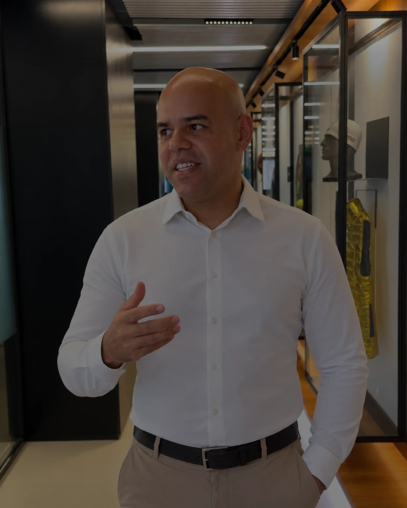
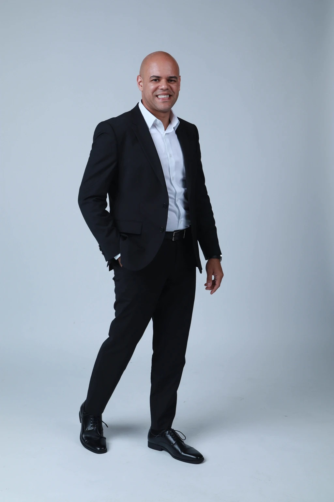

Sou Marcus Novais, planejador financeiro CFP®. Cuido de famílias e também de pessoas endividadas.
Te ajudo a sair do endividamento.
Acesse o link na BIO e clique em "Saia do Endividamento"
Por que quem está endividado tem dificuldade de ver uma saída.

Acorda pensando no boleto. Dorme pensando na fatura. Cada mensagem do banco dá um frio na barriga.
Parece que não tem saída. Parece que tudo vai desabar.

Fontes: Banco Central (renda comprometida, jun/2026) e CNC/Peic (famílias endividadas e inadimplentes, out/2026).
Quando o dinheiro falta por muito tempo, o cérebro entra em modo sobrevivência. Ele só consegue enxergar o problema de hoje, e o amanhã some da sua frente.
A cada volta, a esperança diminui um pouco mais.
Taxas ao ano. Fontes: Copom (Selic, nov/2026) e Banco Central (crédito às famílias, jul/2026; rotativo, fev/2026).
Quando está desesperado, você:
Ninguém faz isso por fraqueza. A escassez rouba o seu foco.
Quem está de fora enxerga o que você não consegue ver agora:
Ela não define quem você é.
O primeiro passo é parar de carregar esse peso sozinho.
Sou Marcus Novais, planejador financeiro CFP®. Cuido de famílias e também de pessoas endividadas.
Te ajudo a sair do endividamento.